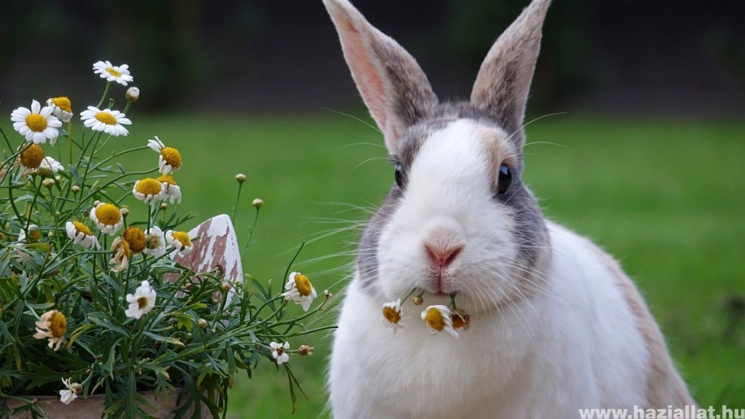

Házi nyúl mérete
Óriásnyulak: 5, de inkább 5,5 kg tömeget meghaladó nyúlfajták Közepes testű nyulak: 3,5–5 kg-os testtömegű nyúlfajták Kistestű nyulak: 2–3,5 kg-os testtömegű nyúlfajták Törpenyulak: 0,9–2 kg testtömegű nyúlfajták 